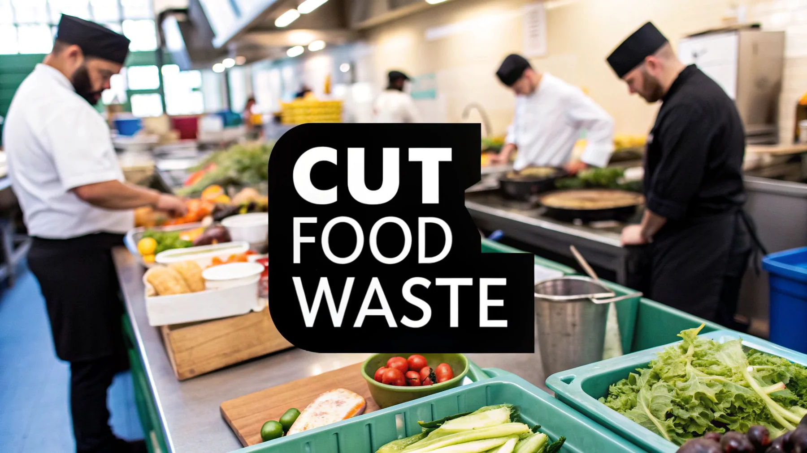

Madspild i Hjemmet:
Madspild er dyrt både for klimaet og privatøkonomien. Få råd til at mindske madspildet derhjemme.
I Danmark smider de private husholdninger 235.000 ton mad ud om året. Det er 27 % af det samlede madspild i Danmark.
Hvor meget, vi hver især smider i skraldespanden, afhænger af husstandens størrelse.
Vi har samlet fire nemme råd, der kan mindske madspildet, og så har vi udviklet et ugeskema og skilte til dit køleskab, der kan hjælpe dig på vej. Det kan du læse mere om her.
Madspild i Detailhandlen
I Danmark smider detailhandlen og fødevaredistributen over 100.000 ton mad ud om året.
Denne store mængde madspild påvirker ikke kun miljøet på en dårlig måde, men koster også fødevare virksomheder en formue i omkostninger.
Det siges at for hvert ton madspild, medføre en klima belastning på omkring 2000-3600 kg CO2-ækvivalenter.
Her under kan du få nogle tips til at undgå madspild i en virksomhed.

Tips til at undgå madspild i Husholdninger

Tips til at mindske madspild i virksomheder.